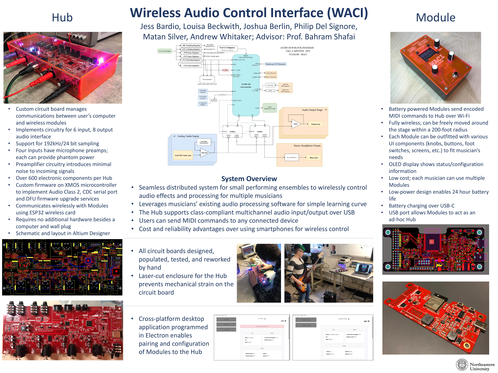

Andrew Whitaker


This project was designed and assembled at Northeastern University in the fall of 2019 for my team’s EECE senior capstone design project. Included here is the abstract and associated project materials.
Thanks to group members Joshua Berlin, Jess Bardio, Matan Silver, Phil Del Signore, and Lousia Beckwith as well as our advisor, Professor Bahram Shafai.
The Wireless Audio Control Interface won the IEEE Eta Kappa Nu honor society’s 2020 Senior Poster competition. A write-up can be found on their website as well as below:
Musicians are increasingly utilizing digital effects to create unique sounds during live performances. In a band with many performers, a dedicated technician will typically operate the audio system; a portable, customizable system allowing all musicians to fine-tune their effects in real time does not currently exist on the market. To bridge this gap and introduce a lower-budget solution, the Wireless Audio Control Interface (WACI) system implements a new method for controlling and mixing audio using conventional performance software. The WACI system consists of a central Hub that can connect to many wireless Modules to suit users’ needs. The system doubles as a 6-input, 8-output audio interface with MIDI support. In this system, each musician can have a Module to control their own effect models, while the Hub provides a central processing link for all instruments.
The Hub is a circuit board developed by this capstone group that contains all electronic subsystems necessary for live audio processing. Four XLR/TRS combo jacks allow instruments or microphones to be plugged directly into the board. The Hub also includes circuitry to power devices such as microphones that require a 48V “phantom power” supply. These analog signals are converted to high-resolution digital representations at up to 194kSPS/24bit and sent to a computer over USB for effects processing. The commands to apply and alter these effects are sent to the Hub, and then to the computer over USB-MIDI, from wireless Modules via an 802.11 WiFi connection. Finally, processed digital audio streams are sent from the computer to the Hub over USB, where the Hub converts them back to analog signals and outputs them to speakers or an amplifier. The USB connection is managed by the main microprocessor, whose firmware implements USB Audio Class 2 over a Type C connector for native operation in Windows 10 or MacOS. The Hub is powered by a standard 12V DC wall adapter.
The Modules are wireless control panels resembling guitar pedals or control panels that musicians can use to remotely adjust audio parameters on the computer. Each Module is battery-powered and has reassignable physical controls. Module hardware configurations include pushbuttons, sliders, knobs, and foot pedals, allowing for various modes of adjustment that feel natural to a musician. Each Module has a display to show status information. The Module circuit boards were developed during the capstone term.
Finally, the WACI system is managed by a custom cross-platform desktop application with the ability to connect Modules and manage settings, such as Module names and MIDI commands. The desktop application also displays critical Module status information, including battery charge level and wireless signal strength. Based on configurations made in the desktop application, the Modules can wirelessly update effects running in any audio processing software.
